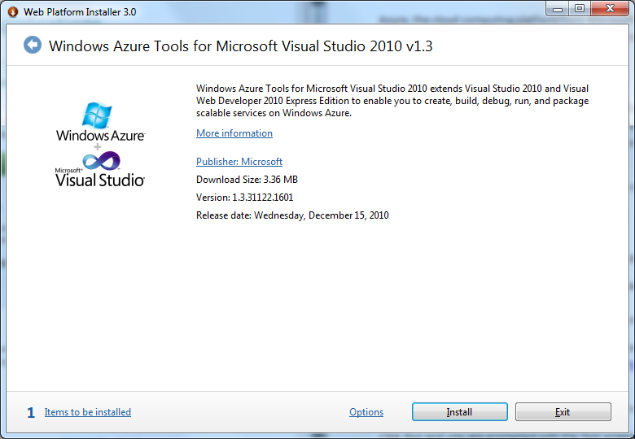
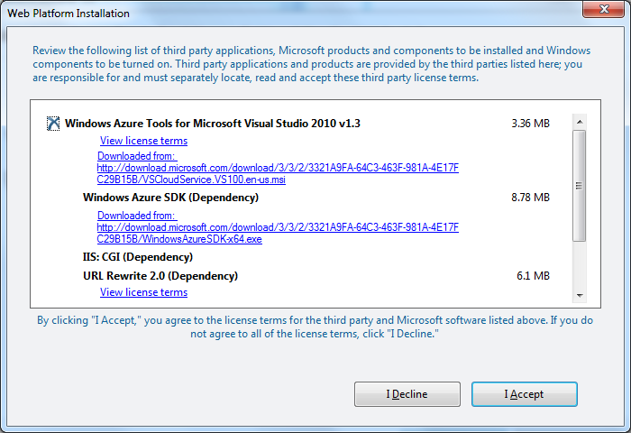

So as i’ve promised – here is first part of my deep dive into cloud computing. Let’s me to remind you why it does matter:
- Mobile devices has limited computation power. You cannot do heavy calculations on mobile CPU
- Similar situation with desktop computers – there are always a lot of heavy calculations even for quad cores
- Doing server-side calculations decrease complexity of the client application. If you have to support a lot of platforms it’s a killer feature Why cloud computing instead of my own server?
- It’s scalable. You can get as much resources as you need.
- It’s cheaper than VPD/VPS solution We are going to create server side face identification application with web-interface front end application. And all the algorithmic part will be done in C++ (Using Boost, OpenCV as well). So application will required cloud hosting service that supports native code execution. Why i choosed Windows Azure?
- Native integration with Visual Studio – easy to debug and deploy applications.
- Supports native code execution.
- Supports .NET framework infrastructure including awesome things like WCF and workflows. One of the features available in Windows Azure environment is the ability to run Web and Worker Roles in full trust environment. The addition of full trust support in Windows Azure not only allows developers to access a wider range of .NET CLR features, but also enables access to unmanaged code through P/Invoke. Access to the unmanaged code (aka native) is a huge advantage, because native code works always faster than managed one. Another pros – you can re-use existing computer vision libraries or your own code in C++ and run it in the cloud environment. Because you would not going to rewrite a half of OpenCV library to C#, wouldn’t you? I will describe all major steps during development so at the end you will be able to create your own cloud application.
Prerequisites
- IIS 7 (with ASP.NET, WCF HTTP Activation)
- Microsoft .NET Framework 4.0
- Microsoft Visual Studio 2010 (with Visual C# or Visual Basic .Net, and Visual C++)
- Windows Azure Tools for Microsoft Visual Studio
- 64-bit Windows 7
- MS SQL Server 2008 Express edition
- Windows Live Id account Ensure that you have installed x64 compilers and tools:
If you do not want to download it from the torrents buy VS 2010, i suggest you to use Web Platform Installer which will download all necessary software and configure it. Download link: http://www.microsoft.com/windowsazure/getstarted/default.aspx Download the installer, launch it and select Visual Web Developer Express and Windows Azure Toolkit to install:

When you click Install on the screen above, you are prompted with a license agreement which you must accept before you can proceed with the installation.

Now you’re ready to create your first cloud application! In the next part i will describe cloud application architecture and use case scenario.